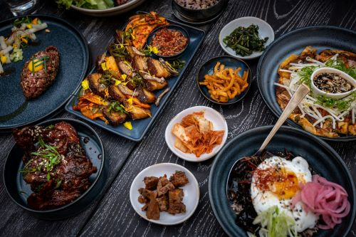

Work in Korea
First, I need to become fluent in Korean and pass the TOPIK test. The TOPIK exam's purpose is to text fluency in listening, writing, and speaking. I am using TOPIK study guides, TTMIK textbooks, and various Korean podcasts. I also watch a lot of Kdramas. . . for 'educational' purposes.
언젠가는 한국으로 이주하여 그곳에서 일할 것입니다. 지금은 한국어를 계속 연습할 것입니다. 하지만 아직 잘 못합니다.
제가 가장 좋아하는 한국 음식
My Favorite Korean Food
- 빙수 | Like shaved ice cream.
- 불고기 | Korean marinated beef.
- 라면 | Ramen. Everyone knows this one!